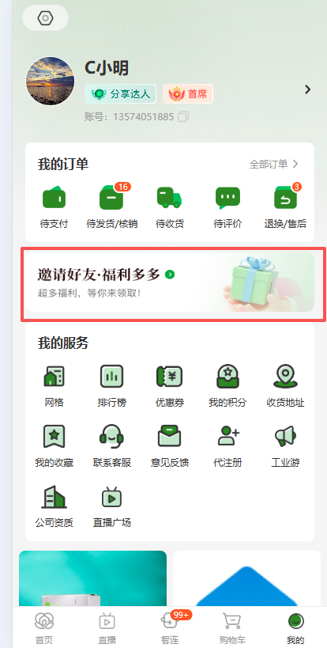
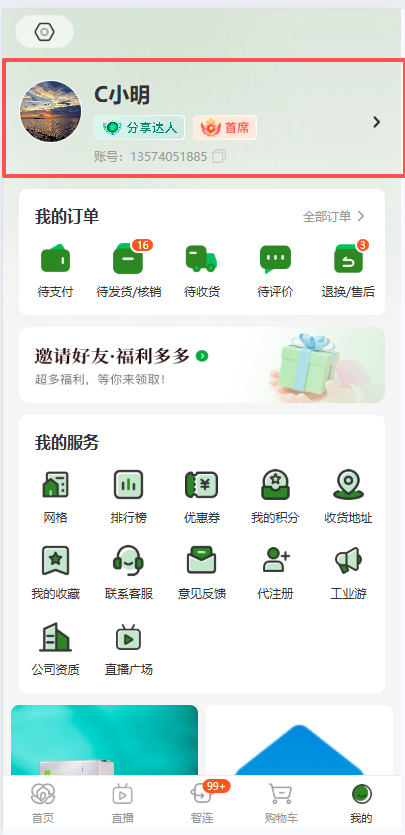
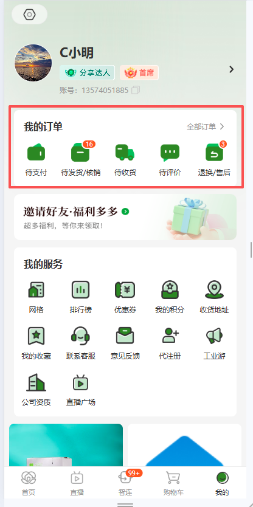
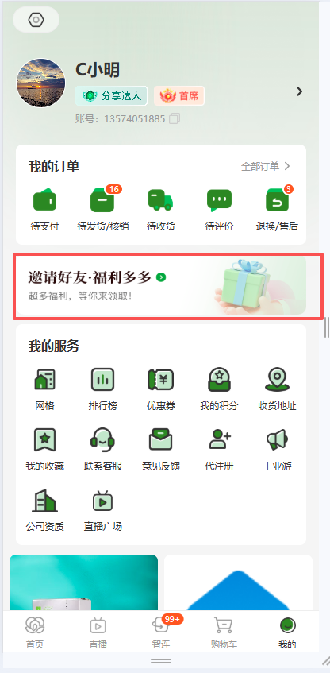
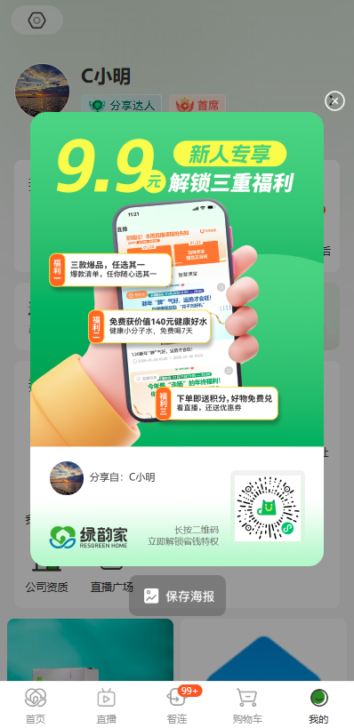
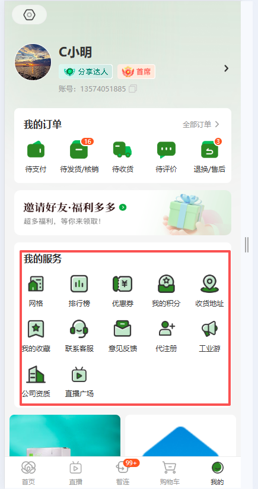
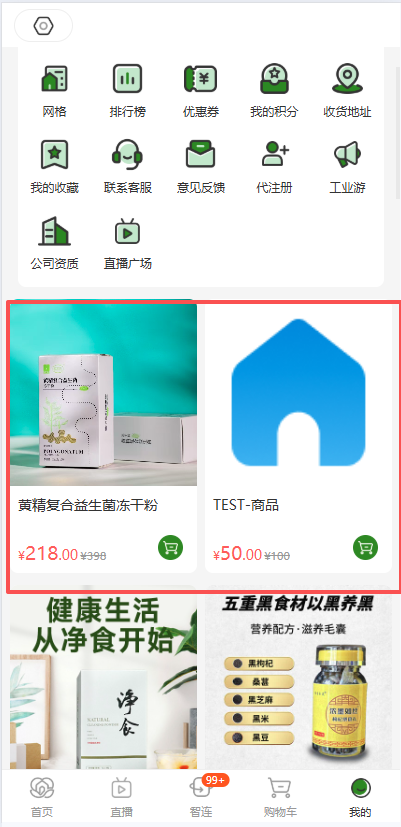

| 项目 | 内容 |
|---|---|
| 项目名称 | 绿韵家App「我的」页面改版（分享弹窗重构 + 我的服务入口调整 + 推荐商品对齐首页） |
| 文档版本 | V1.1 |
| 创建日期 | 2026-08-17 |
| 文档状态 | 草稿 / 待评审 |
| 产品负责人 | ⚠️ 待确认 @产品负责人 |
| 技术Owner | ⚠️ 待确认 @研发负责人 |
| 测试负责人 | ⚠️ 待确认 @测试负责人 |
| 版本号 | 修订日期 | 修订人 | 修订内容简述 | 状态 |
|---|---|---|---|---|
| V1.0 | 2026-08-17 | PM | 初版：基于7张小程序截图输出「我的」页面改版PRD。本期范围=分享弹窗重构（参照新分享弹窗样式+双端二维码逻辑）+ 我的服务删减4个入口（排行榜/优惠券/收藏/直播广场）+ 推荐商品算法对齐首页。 | 草稿 |
| V1.1 | 2026-08-17 | PM | 待确认项全部闭环：①分享场景表修正App内扫码不跳转（提示请用App外相机扫描）；②TC-01/05 主视觉与福利标签沿用现有后台配置、不新增管理逻辑；③TC-02 删除入口后保持原间距留空不重排；④TC-03 无invite_code由后端实时生成；⑤TC-04 保存海报通用兼容低版本（降级长按/保存兜底）。§九 五项全部转为「已确认」。 | 定稿 |
绿韵家小程序当前「我的」页面存在以下问题需优化：
| 目标维度 | 具体指标/描述 | 优先级 |
|---|---|---|
| 分享转化提升 | 通过新版分享弹窗（新人专享视觉 + 海报保存）提升用户分享意愿和邀请注册率 | P0 |
| 页面精简 | 「我的服务」从12个入口缩减至8个，降低用户认知负荷 | P0 |
| 体验一致性 | 推荐商品算法与首页完全一致，避免用户感知差异 | P1 |
改版后「我的」页面自上而下由以下模块组成：
注：本节为页面级流程概述，详细字段规则见 §四 功能需求详情。本需求不涉及商家端后台、火山SaaS等范围外系统。
改版后「我的」页面完整效果如下：

图1：改版后「我的」页面全貌（红框标注区域为本期涉及改动的模块）
界面与展示规则：
| 字段名称 | 需求说明 | 备注 |
|---|---|---|
| 页面标题 | 固定显示「我的」，顶部导航栏居中 | 沿用现有 |
| 页面结构 | 自上而下5个模块依次排列：个人信息 → 订单信息 → 分享邀请 → 我的服务 → 推荐商品 | 顺序不可调换 |
| 滚动行为 | 整体可纵向滚动，各模块随页面滚动；分享弹窗弹出时底层页面锁定不可滚动 | 沿用现有 |

图2：个人信息板块（红框区域）
沿用现有功能。
界面元素：头像（圆形）、昵称（C小明示例）、标签行（分享达人/首庺）、账号（13574051885示例）、右侧箭头指示可点击跳转。
交互：点击整行跳转至个人信息详情页。沿用现有跳转逻辑和数据读取接口。

图3：订单信息板块（红框区域）
沿用现有功能。
界面元素：标题「我的订单」+ 右侧「全部订单 >」入口 + 5个订单状态图标（待支付 / 待发货待销 / 待收货 / 待评价 / 退换售后），各图标右上角角标显示对应未完成数量。
交互：点击各图标跳转对应状态的订单筛选列表页；点击「全部订单」跳转订单列表页。沿用现有接口和跳转逻辑。

图4：分享邀请卡片（红框区域，点击触发弹窗）

图5：分享弹窗完整样式（本期新增UI）
一、界面与展示规则
| 区域 | 字段/元素 | 需求说明 | 备注 |
|---|---|---|---|
| 弹窗主体-上部 | 弹窗容器 | 圆角矩形 Modal，宽度占屏幕85%，居中显示，带半透明黑色遮罩背景（点击遮罩关闭弹窗） | 关闭按钮 × 在右上角 |
| 主视觉区 | 渐变绿色背景（#4CAF50 → #81C784），左侧大字「9.9元」黄色 + 「新人专享」白色标签 + 「解锁三重福利」副标题 | 运营配置素材，后续可替换 | |
| 手机 Mock | 右侧手持手机示意图，屏幕内展示小程序界面预览 | 设计稿固定素材 | |
| 福利标签×3 | 手机Mock左侧悬浮3个橙色标签气泡，分别描述三重福利内容（如「三款爆品 任选其一」「免费获价值140元健康好水」「下单即送积分 好物免费兑」） | 文案可运营后台配置 | |
| 底部圆弧 | 主视觉区底部以橙黄色手掌/手臂插画收尾，过渡到白色信息区 | 设计稿固定素材 | |
| 弹窗主体-下部 | 分享人信息 | 左侧：圆形头像（取当前登录用户头像）+ 文字「分享自：{昵称}」 | 数据来源：登录态 user_info |
| 二维码 | 右侧：正方形二维码图片，根据终端类型区分生成（详见下方「二、二维码生成逻辑」） | 尺寸建议 160×160px | |
| 品牌标识 | 绿韵家 Logo + 名称「绿韵家 LvgreenHome」 | 固定 | |
| 提示文案 | 二维码旁文字：「长按二维码 立即解锁省钱特权」 | 固定文案 | |
| 弹窗底部 | 保存海报按钮 | 横向通栏按钮，图标🖼️ + 文字「保存海报」，点击后将弹窗全部内容合成为一张 PNG 图片并调用系统保存到相册 | 需申请相册写入权限 |
二、二维码生成逻辑（核心改动）
本期核心变更：分享弹窗中的二维码不再统一使用小程序码，而是根据当前运行终端分别生成不同类型的二维码：
| 运行终端 | 二维码类型 | 生成方式 | 扫码结果 | 是否带推荐关系 |
|---|---|---|---|---|
| App / H5 | App 下载或唤起链接二维码 | 后端生成包含 invite_code 参数的短链 → 转二维码图片 | 微信扫码：打开 App 下载引导页（H5）；已安装用户：直接唤起 App 并落地首页，同时绑定推荐关系 | 是 |
| 微信小程序 | 小程序码（WXACode） | 调用微信 wxacode.getUnlimited 接口，scene 参数带入当前用户 invite_code | 扫码进入小程序首页，启动时读取 scene 参数绑定推荐关系 | 是 |
GET /api/share/qrcode?terminal={app|mini}&invite_code={code}，返回 base64 图片或图片 URL。三、分享场景详细功能表（PRD-DETAIL-010）
| 分享场景 | 分享海报示例图 | 是否带推荐关系 | 微信扫码 | 微信扫码落地页 | App扫码 | App扫码落地页 | 手机相机扫码 | 手机相机扫码落地页 |
|---|---|---|---|---|---|---|---|---|
| App / H5 端「我的」-邀请好友分享（弹窗二维码=App下载/唤起链接码） | 见图5（分享弹窗即海报） | 是（invite_code 写入链接参数） | 微信内识别 URL → 微信浏览器打开 H5 下载引导页（含「在浏览器打开 / 下载 App」引导） | H5 下载引导页 | App 内扫一扫识别 URL → 不跳转，提示「请用 App 外相机扫描」 | 无（提示文案） | 手机原生相机识别 URL → 系统弹「在浏览器中打开」→ 打开 H5 下载引导页 | H5 下载引导页 |
| 微信小程序端「我的」-邀请好友分享（弹窗二维码=小程序码，scene 带 invite_code） | 见图5（分享弹窗即海报） | 是（scene 参数含 invite_code） | 微信识别小程序码 → 拉起小程序首页，启动时读取 scene 绑定推荐关系 | 小程序首页 | App 无法识别小程序码 → 提示「请在微信中扫一扫」 | 无（提示文案） | 手机相机无法识别小程序码 → 提示「请使用微信扫一扫」 | 无（提示文案） |
说明：二维码类型由当前运行终端决定，前端在弹窗打开时判断环境后请求对应类型；三列「扫码方式 / 落地页」固定对应微信扫码、App扫码、手机相机扫码三种入口，结果如上行所示。
四、功能按钮总表
| 功能名称 | 功能说明 | 备注 |
|---|---|---|
| 打开分享弹窗 | 点击「邀请好友·福利多多」卡片区域触发弹窗弹出 | 触发区域 = 整个分享卡片 |
| 关闭弹窗 | 点击右上角 × 按钮或点击遮罩层关闭 | 无二次确认 |
| 保存海报 | 点击「保存海报」按钮，canvas 合成弹窗内容为PNG → 调用系统API保存到相册 → Toast 提示「海报已保存到相册」→ 自动关闭弹窗 | 需相册权限；拒绝权限时引导到设置页 |
五、「保存海报」按钮逐步操作逻辑
六、数据来源（字段级）
| 字段 | 取值逻辑说明 |
|---|---|
| 分享人头像 | 取《用户表》.avatar_url |
| 分享人昵称 | 取《用户表》.nickname，脱敏规则沿用现有（默认显示完整昵称） |
| invite_code | 取《用户表》.invite_code |
| 二维码图片 | 调 GET /api/share/qrcode?terminal={app|mini}&invite_code={code} 返回 |
| 主视觉素材 / 福利标签文案 | 已确认 沿用现有后台配置能力：主视觉图与3条福利标签文案由运营在后台配置，前端动态拉取展示；本期不新增素材管理逻辑（TC-01 / TC-05 结论）。 |

图6：我的服务板块（红框区域，本期删除其中4个入口）
一、本期改动说明
「我的服务」区域从原有的 12 个入口删减至 8 个。具体变更：
| 入口名称 | 本期操作 | 原因说明 |
|---|---|---|
| 网格 | 保留 | 基础功能入口保留 |
| 排行榜 | 删除 | 本期移除 |
| 优惠券 | 删除 | 本期移除 |
| 我的积分 | 保留 | 基础功能入口保留 |
| 收货地址 | 保留 | 基础功能入口保留 |
| 我的收藏 | 删除 | 本期移除 |
| 联系客服 | 保留 | 基础功能入口保留 |
| 意见反馈 | 保留 | 基础功能入口保留 |
| 代注册 | 保留 | 基础功能入口保留 |
| 工业游 | 保留 | 基础功能入口保留 |
| 公司资质 | 保留 | 基础功能入口保留 |
| 直播广场 | 删除 | 本期移除 |
二、保留入口的布局与交互
删除4个入口后，保持原网格间距与排列规则不变，仅隐藏被删入口（排行榜 / 优惠券 / 我的收藏 / 直播广场），其位置留空、不重排其余入口（TC-02 结论）。保留的8个入口维持原有视觉间距，避免布局抖动。
已确认 布局策略：原间距留空，不做 4列×2行 或 5列×2行 的重新排布。
三、保留入口的跳转逻辑
所有保留入口的跳转目标页面沿用现有逻辑不变，本期仅做入口可见性调整（隐藏4个），不改动跳转目标。

图7：推荐商品板块（红框区域）
一、界面与展示规则
| 字段名称 | 需求说明 | 备注 |
|---|---|---|
| 布局 | 2列瀑布流，每张卡片含：商品主图（正方形）、商品名称（单行省略）、现价（红色大字）+ 划线价（灰色小字）、购物车图标按钮 | 沿用现有 |
| 加载数量 | 首屏加载10个，滚动到底部触发翻页（每页10个） | 与首页一致 |
| 空态 | 无推荐商品时整个模块隐藏，不展示空态占位 | 沿用现有 |
二、推荐算法
「我的」页面推荐商品的排序算法 与首页「猜你喜欢」模块完全一致，复用同一套推荐接口。算法规则引用《绿韵家App首页改版PRD》§4.1.7 猜你喜欢章节，此处不做重复定义。
简要回顾（供快速参考）：
三、数据来源
| 字段 | 取值逻辑说明 |
|---|---|
| 商品列表 | 调首页同一推荐接口 GET /api/goods/recommend 返回 |
| 商品主图 | 取返回数据 goods_img |
| 商品名称 | 取返回数据 goods_name |
| 现价 | 取返回数据 price（实际销售价） |
| 划线价 | 取返回数据 original_price（市场价） |
| 指标 | 要求 |
|---|---|
| 分享弹窗打开耗时 | 点击到弹窗完全渲染 ≤ 500ms（二维码图片需提前预加载或用 loading 占位） |
| 海报生成耗时 | canvas 合成 ≤ 2s，超时给 loading 提示 |
| 推荐商品加载 | 复用首页接口，首屏 ≤ 1.5s |
本期涉及的埋点事件如下（引用既有埋点规范，新事件走埋点评审）：
| 事件英文名 | 显示名 | 层 | 平台 | 触发时机 | 必含参数 | 备注 |
|---|---|---|---|---|---|---|
| mine_share_popup_show | 分享弹窗曝光 | L1 | 全终端 | 分享弹窗完全渲染后 | page_name, invite_code, terminal_type | 新增事件，需埋点评审 |
| mine_share_popup_close | 分享弹窗关闭 | L1 | 全终端 | 用户主动关闭弹窗时（×按钮/遮罩/保存后自动关闭） | page_name, close_type(button|mask|auto_save) | 新增事件，需埋点评审 |
| mine_share_poster_save | 保存海报 | L1 | 全终端 | 用户点击「保存海报」按钮时 | page_name, result(success|fail|deny), fail_reason | 新增事件，需埋点评审 |
| mine_service_entry_click | 我的服务入口点击 | L1 | 全终端 | 点击任一服务入口图标时 | page_name, entry_name | 沿用既有事件，entry_name 枚举值更新（去掉4个删除项） |
注：以上新增事件（mine_share_*）需提交埋点评审后方可上线，禁止自行在代码中先上报再补评审。
| 编号 | 验收项 | 优先级 | 验证方法 |
|---|---|---|---|
| AC-01 | 个人信息板块展示正常，点击跳转个人信息页 | P0 | 功能测试 |
| AC-02 | 订单信息板块5个状态图标正常展示，角标数字准确，点击跳转正确列表 | P0 | 功能测试 |
| AC-03 | 点击「邀请好友·福利多多」卡片弹出分享弹窗，UI 与设计稿（图5）一致 | P0 | UI验收 + 功能测试 |
| AC-04 | App/H5 端弹窗内二维码为 App 下载链接二维码（非小程序码） | P0 | 接口测试 + 扫码验证 |
| AC-05 | 小程序端弹窗内二维码为带参小程序码（scene 含 invite_code） | P0 | 接口测试 + 扫码验证 |
| AC-06 | 扫码后推荐关系正确绑定（被邀请人注册后与分享人建立上下级关系） | P0 | 端到端流程测试 |
| AC-07 | 「保存海报」按钮点击后正确合成图片并保存到相册 | P0 | 功能测试（iOS + Android） |
| AC-08 | 拒绝相册权限时有友好 Toast 引导，不崩溃 | P1 | 异常路径测试 |
| AC-09 | 「我的服务」区域仅展示8个入口（网格/我的积分/收货地址/联系客服/意见反馈/代注册/工业游/公司资质），排行榜/优惠券/收藏/直播广场不可见 | P0 | UI验收 |
| AC-10 | 推荐商品列表与首页「猜你喜欢」数据源一致、排序一致 | P1 | 数据比对测试 |
| AC-11 | 分享弹窗埋点事件（show/close/poster_save）正确上报且参数完整 | P1 | 埋点验证 |
| 检查项 | 结论/说明 |
|---|---|
| 未登录状态下「我的」页面表现 | 沿用现有逻辑：未登录跳转登录页，登录后才可看到完整「我的」页面 |
| 用户无 invite_code 时分享弹窗表现 | 已确认 后端在分享时实时生成 invite_code（若《用户表》无则自动创建并写回），保证二维码始终带参，分享入口不隐藏（TC-03 结论）。 |
| 二维码接口超时/失败 | 弹窗内二维码区域显示 loading → 超时3s后展示「加载失败，点击重试」占位图 |
| 推荐商品接口返回空 | 整个推荐商品模块隐藏，不展示空态 |
| 「保存海报」在低版本微信的表现 | 已确认 canvas 2D 不支持时降级为「长按二维码识别 / 保存图片」兜底方案，通用兼容低版本微信，不强制要求最低基础库版本（TC-04 结论）。 |
| 分享弹窗内容运营替换频率 | 已确认 沿用现有后台配置，运营在后台自助替换主视觉图与福利文案，本期不新增定时切换逻辑（TC-05 结论，与 TC-01 合并）。 |
| 编号 | 待确认事项 | 关联章节 | 建议咨询对象 | 状态 |
|---|---|---|---|---|
| TC-01 | 分享弹窗主视觉图和3条福利标签文案是写死还是支持后台配置？若支持配置需补充后台字段设计 | §4.4.3 | @运营 | 已确认 沿用现有后台配置，前端动态拉取，不新增管理逻辑 |
| TC-02 | 删除4个服务入口后的布局方式（4列×2行 vs 其他） | §4.5.2 | @UI | 已确认 保持原间距留空，不重排 |
| TC-03 | 用户无 invite_code 时的分享弹窗表现（自动生成 vs 隐藏入口） | §七 | @后端 | 已确认 后端实时自动生成，不隐藏入口 |
| TC-04 | 「保存海报」低版本微信兼容策略（降级 or 要求最低基础库） | §七 | @研发 | 已确认 通用兼容，降级为长按/保存兜底 |
| TC-05 | 分享弹窗运营素材替换机制（手动换 vs 后台配置定时切换） | §七 | @运营 | 已确认 同 TC-01，后台自助替换，不新增定时切换 |